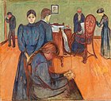
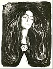
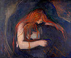
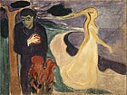
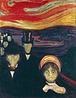
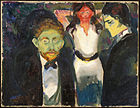
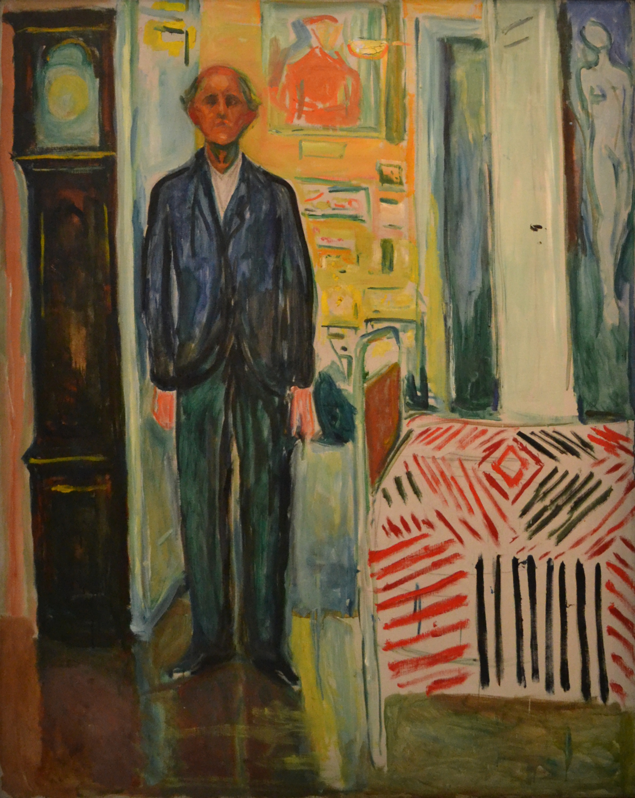

Edvard Munch; 12 December 1863 – 23 January 1944) was a Norwegian painter, whose best-known work, The Scream, has become one of the most iconic images of world art. His childhood was overshadowed by illness, bereavement and the dread of inheriting a mental condition that ran in the family. Studying at the Royal School of Art and Design in Kristiania (today’s Oslo), Munch began to live a bohemian life under the influence of nihilist Hans Jæger, who urged him to paint his own emotional and psychological state ('soul painting'). From this would presently emerge his distinctive style (Anonymous, 2019).
Frieze of Life:
  'Death in the Sickroom' - 1895 -- 'The Brooch' - 1903 -- 'Love and Pain' - 1895
Travel brought new influences and new outlets. In Paris, he learned much from Paul Gauguin, Vincent van Gogh and Henri de Toulouse-Lautrec, especially their use of colour. In Berlin, he met Swedish dramatist August Strindberg, whom he painted, as he embarked on his major canon The Frieze of Life, depicting a series of deeply-felt themes such as love, anxiety, jealousy and betrayal, steeped in atmosphere (Anonymous, 2019).
"The Frieze of Life" themes recur throughout Munch's work, but he especially focused on them in the mid-1890s. In sketches, paintings, pastels and prints, he tapped the depths of his feelings to examine his major motifs: the stages of life, the femme fatale, the hopelessness of love, anxiety, infidelity, jealousy, sexual humiliation, and separation in life and death. These themes are expressed in paintings such as The Sick Child (1885), Love and Pain (retitled Vampire; 1893–94), Ashes (1894), and The Bridge. The latter shows limp figures with featureless or hidden faces, over which loom the threatening shapes of heavy trees and brooding houses (Anonymous,2019).
  'Separation' - 1896 -- 'Anxiety' - 1894 -- 'Jealousy' - 1907
The Scream:
The Scream is Munch's most famous work, and one of the most recognizable paintings in all art. It has been widely interpreted as representing the universal anxiety of the modern man. Painted with broad bands of garish color and highly simplified forms, and employing a high viewpoint, it reduces the agonized figure to a garbed skull in the throes of an emotional crisis (Anonymous,2019).
With this painting, Munch met his stated goal of "the study of the soul, that is to say the study of my own self". Munch wrote of how the painting came to be: "I was walking down the road with two friends when the sun set; suddenly, the sky turned as red as blood. I stopped and leaned against the fence, feeling unspeakably tired. Tongues of fire and blood stretched over the bluish black fjord. My friends went on walking, while I lagged behind, shivering with fear. Then I heard the enormous, infinite scream of nature." He later described the personal anguish behind the painting, "for several years I was almost mad… You know my picture, 'The Scream?' I was stretched to the limit—nature was screaming in my blood… After that I gave up hope ever of being able to love again." (Anonymous,2019.)

'The Scream' - 1893
Edvard Munch was an incredibly bold artist. He truly painted what the world needed to see, true expression of feelings, unafraid, big, strong expressions made to the world in order to convey his soul and what it felt. These feelings are typical of human nature and so, in my opinion, he did early humanity a favour by beginning the normalization of such feelings' existence. For this, I believe him to be one of the most outspoken and important artists of the 20th century.
Some have speculated that Munch's views of the world being so dark, eerie, and noisy may be due to schizophrenia. It may be a valid explanation to the loud colours he saw the world in and how nature "screamed" at him as Schizophrenia heightens and alters your senses, flooding your brain with extremely intense signals and so, your world view can seem LOUD and terrifying.
'Self-Portrait. Between the Clock and the Bed' - 1943
Reference: Edvard Munch. (2019, November 25). Retrieved from https://en.wikipedia.org/wiki/Edvard_Munch.
Click to visit reference page for more information